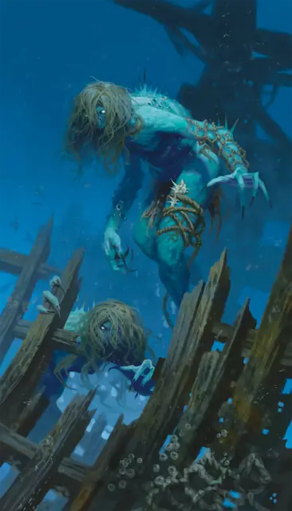

Морская карга
Sea Hag
Средняя Фея, Хаотичная Злая

Класс Защиты 14 Инициатива +1 (11)
Хиты 52 (7к8 + 21)
Скорость 30 футов, Плавания 40 футов
| мод | спас | ||
|---|---|---|---|
| СИЛ | 16 | +3 | +3 |
| ЛОВ | 13 | +1 | +1 |
| ТЕЛ | 16 | +3 | +3 |
| мод | спас | ||
|---|---|---|---|
| ИНТ | 12 | +1 | +1 |
| МДР | 12 | +1 | +1 |
| ХАР | 13 | +1 | +1 |
Чувства Тёмное зрение 60 футов, пассивное Восприятие 11
Языки Общий, Великаний, Первичный (Акван)
Опасность 2 (450 опыта; БВ +2)
Особенности
Амфибия. Морская карга может дышать как воздухом, так и под водой.
Магия ковена. Пока карга находится в пределах 30 футов от хотя бы двух своих союзников, она может сотворить одно из следующих заклинаний, не нуждаясь в Материальных компонентах, используя нормальную длительность сотворения заклинания и используя Интеллект как заклинательную характеристику (Сл спасброска заклинаний 11): Гадание, Обретение фамильяра, Опознание, Поиск объекта, Наблюдение или Невидимый слуга. Карга должна завершить Долгий отдых, чтобы использовать эту особенность для сотворения заклинания повторно.
Мерзкая внешность. Спасбросок Мудрости: Сл 11, любой Зверь или Гуманоид, начинающий свой ход в 30 футах от карги и видящий её истинную форму. Провал: Цель Испугана до начала своего следующего хода. Успех: Цель получает иммунитет к Мерзкой внешности этой карги на 24 часа.
Действия
Когти. Бросок рукопашной атаки: +5, досягаемость 5 фт. Попадание: 10 (2к6 + 3) Рубящего урона.
Смертоносный взор (Перезарядка 5–6). Спасбросок Мудрости: Сл 11, одно видимое каргой Испуганное существо в 30 футах. Провал: Если у цели 20 Хитов или меньше, то её Хиты опускаются до 0. В противном случае цель получает 13 (3к8) Психического урона.
Иллюзорная внешность. Карга сотворяет заклинание Маскировка, используя Телосложение как заклинательную характеристику (Сл спасброска против заклинаний 13). Длительность заклинания равна 24 часам.
Бонус мастерства +2
Среда обитания Прибрежье, Под водой
Сокровища Магические
Морская карга
Ведьма мрачных глубин и отчаяния
Морские карги питают отвращение к мирной жизни и красоте. Эти злобные и завистливые существа всюду распространяют хаос и портят радость, а также прибегают к правдоподобным иллюзорным обличиям, чтобы сеять раздор ради раздора. Истинные формы этих карг — сверхъестественны и отвратительны, а их зловещий взор способен сразить существ, испуганных их внешним видом.
Чтобы осуществить свои планы, морские карги окутывают себя иллюзиями. Совершите бросок по таблице «Маскировка морской карги» для вдохновения или выберите сами созданную ей иллюзию и то, как с её помощью она сеет хаос и разрушения.
Маскировка морской карги
| 1к6 | Морская карга принимает вид… |
| 1 | Невольника и утверждает, что жители близлежащей деревни связали и бросили его в воду. |
| 2 | Потерпевшего кораблекрушение и делится со своими «спасителями» местонахождением проклятого предмета. |
| 3 | Целителя и выдаёт яд за лекарство. |
| 4 | Предсказателя, предупреждающего о конце света. |
| 5 | Капитана корабля и доставляет пассажиров к приручённому морскому чудовищу карги. |
| 6 | Раненого моряка и утверждает, что его корабль был уничтожен мерфолками или другим мирным народом. |